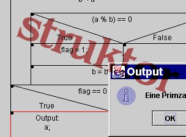

Die Hauptkomponente dieses Webangebots (Struktor) ist ein JavaApplet, mit dessen Hilfe man Struktogramme erstellen und interaktiv ablaufen lassen kann (unter Vollprogramm). Um dieses Applet zu benutzen brauchen Sie einen javafähigen Browser wie z.b. den
Mozilla Firefox.
Struktor unterliegt der
GNU Public License. Das Programm inklusive des Sourcecodes kann im Bereich "News" runtergeladen werden !
Dieses Dokument ist keine Publikation einer offiziellen Stelle. Das Dokument erhebt weder den Anspruch auf Vollständigkeit noch auf Fehlerfreiheit. Für Fehler in
allen Programmen, die auf falsche oder falsch verstandene Beschreibungen in diesem Dokument zurückzuführen sind, übernimmt der Autor keine Haftung. Die Angebote dieser Seite sind völlig kostenfrei.